REF: PROJ-GALLERY
Projects & Workshop Gallery
A selection of our machinery, fabrication and structural steel work.
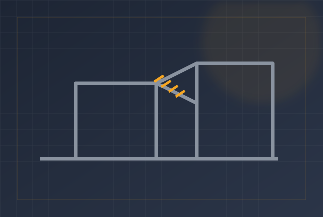
TIG Weld Assembly
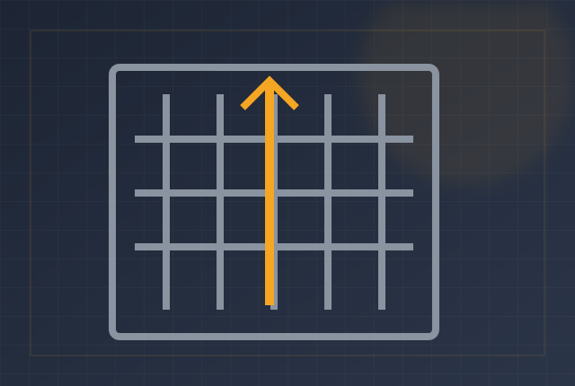
Bucket Elevator System
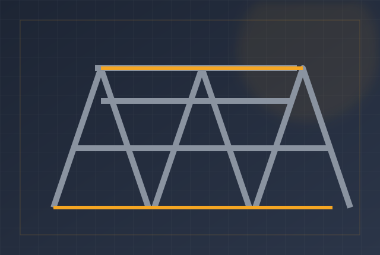
Structural Steel Framework
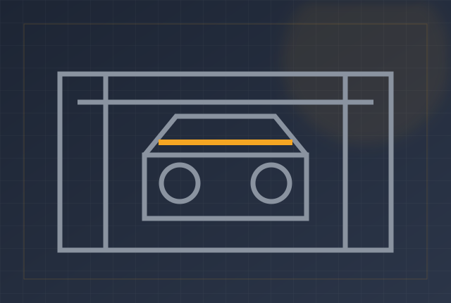
Workshop Fabrication
Design & Engineering Review
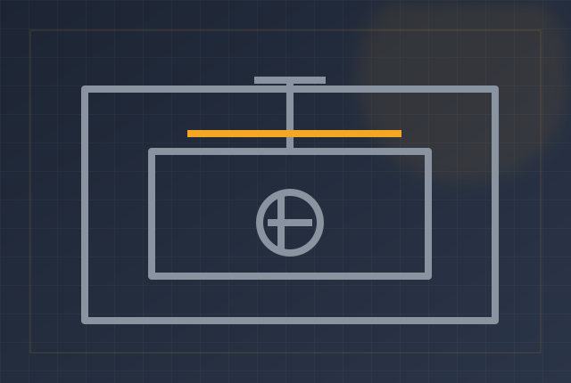
CNC Laser Cutting
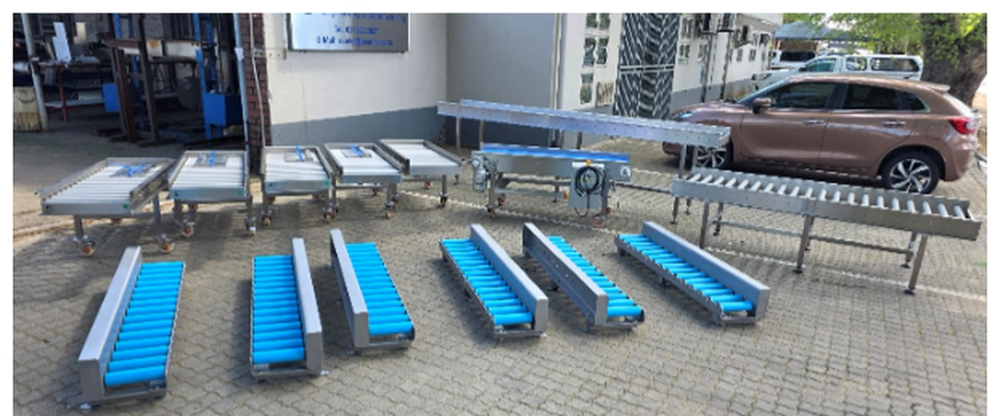
Gravity Roller Conveyors
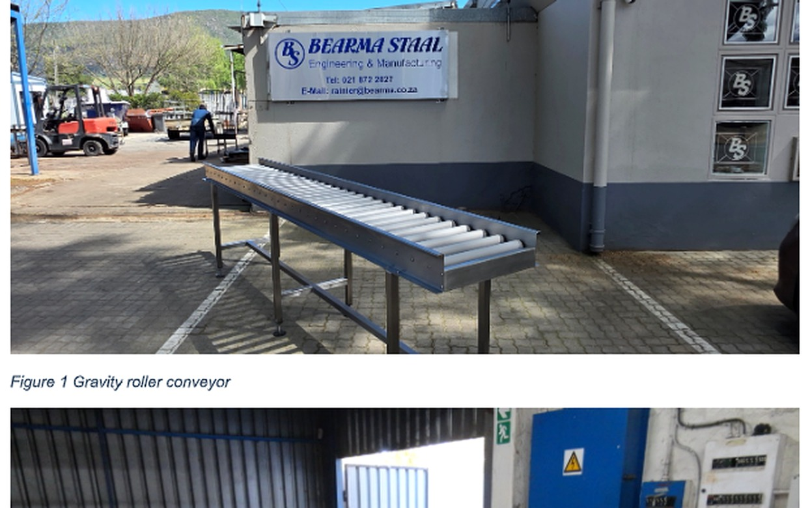
Driven Roller Pallet Conveyor
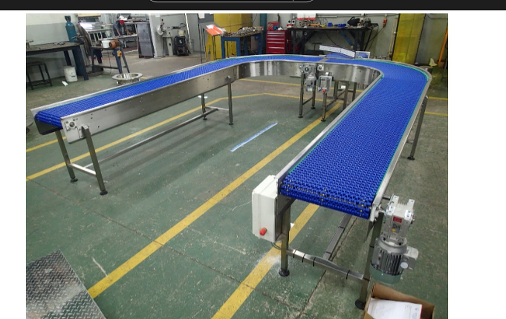
Food-Grade Modular Conveyor
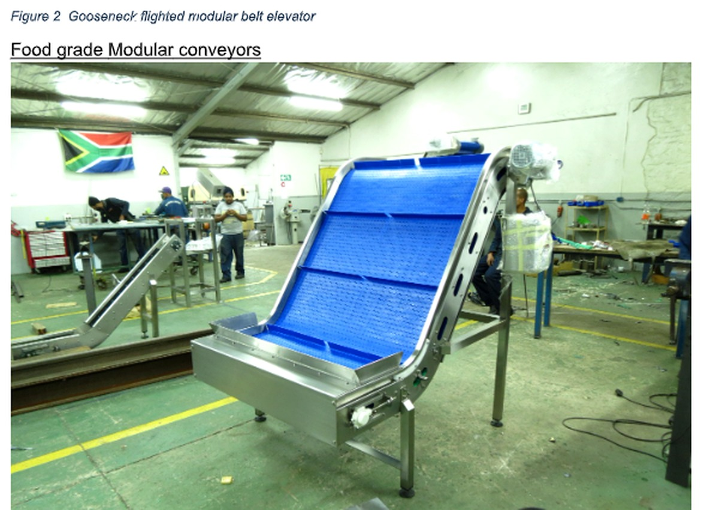
Flighted Modular Belt Elevator

Stainless Steel Kitchens & Sculleries
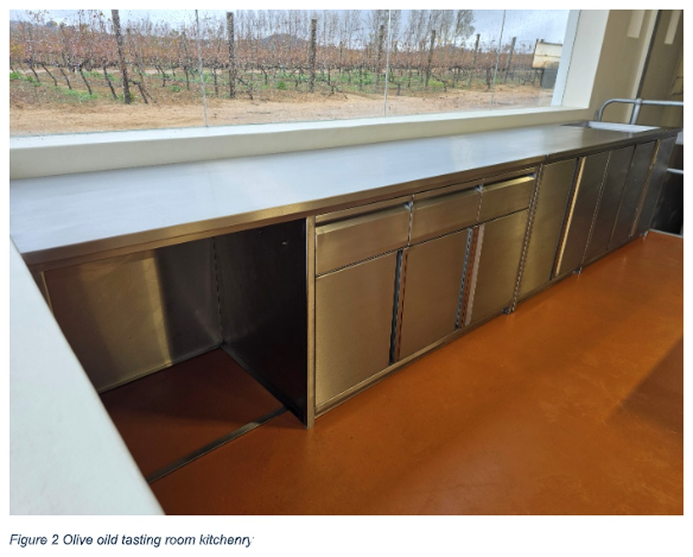
Olive Oil Tasting Room Kitchen
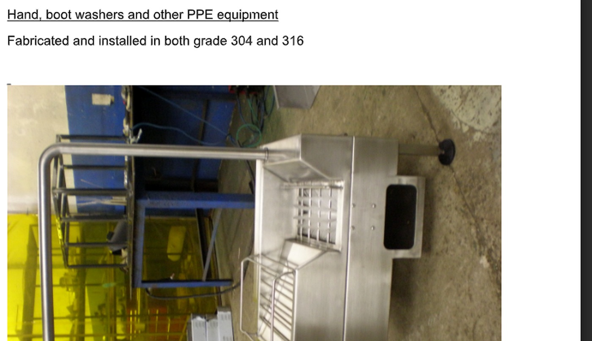
Boot Washer

Hand Washer
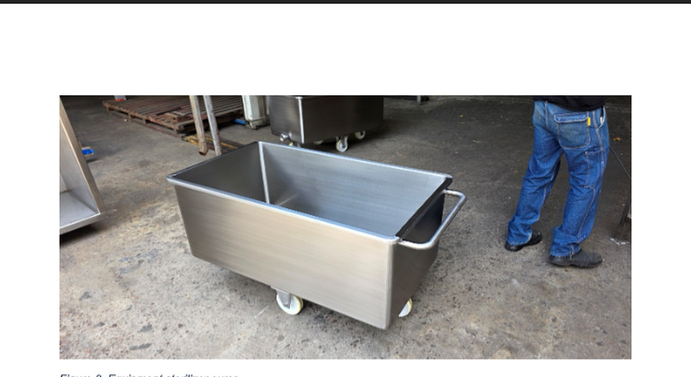
Equipment Sterilizer Sump
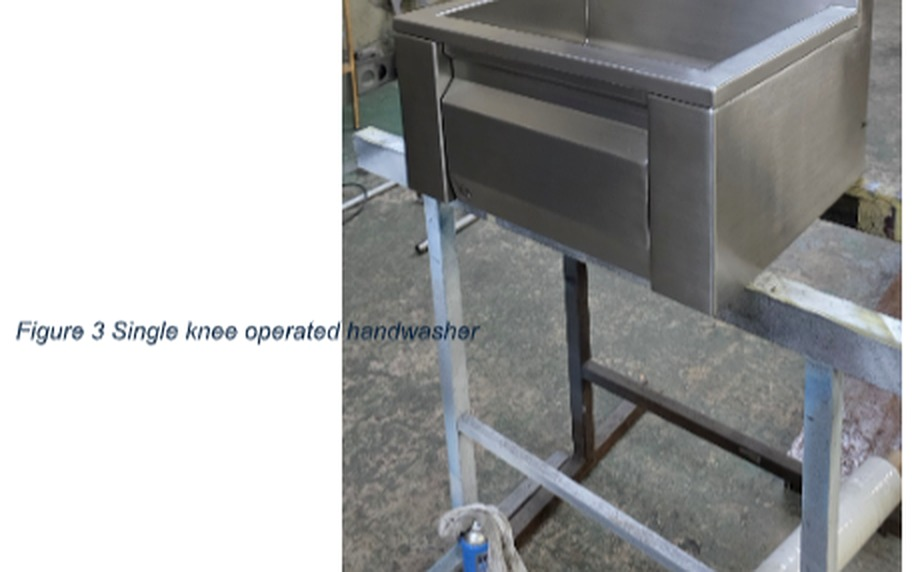
Knee-Operated Equipment
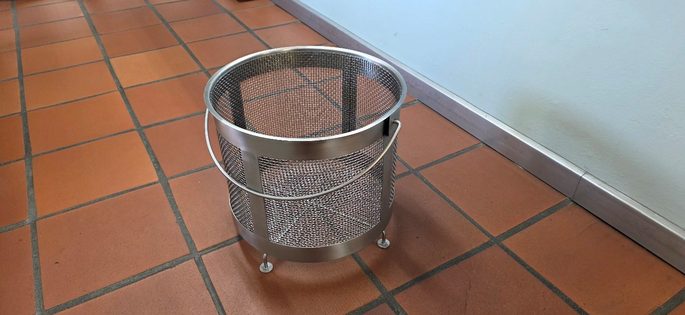
Strainer Basket
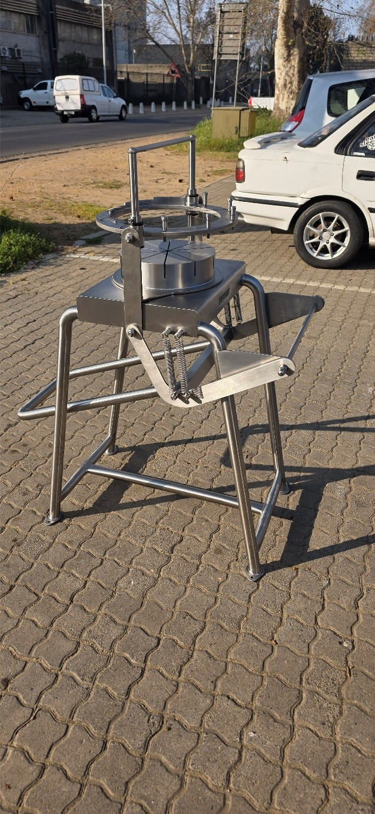
Industrial Cheese Cutter
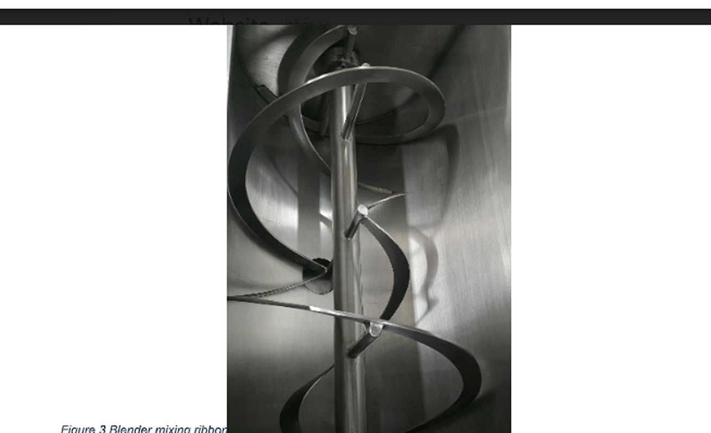
Food-Grade Ribbon Blender
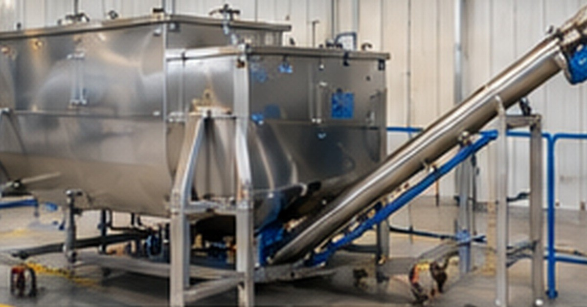
Ribbon Blender with Transfer Screw
Have a project in mind? We engineer custom steel solutions to your exact requirements.
Start Your Project →